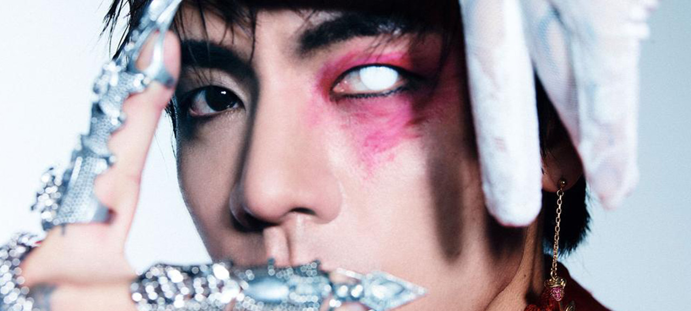

DPR IAN:
An artist you should check out at least once in your life.
Christian Yu, known as DPR IAN is a Korean Australian multi-talented artist, from singer to director under his co-founded label DPR. Which stands for Dream Perfect Regime, it is a multi-genre music label that produces all types of audiovisual creations. DPR IAN began his career with the digital single “So Beautiful” in October of 2020 in which we found a Rock/Alternative song that has an upbeat tone, in which the artist depicts a tragic love story.
Personally, I began to love his artistry during his first studio album “Moodswings In This Order ” (MITO) in which was lunch in July 2021. This album was created by the artist inspired by the darkness of MITO; a persona created from the low's swings of Ian's bipolar disorder. While you dive into the progress of the album, it feels like you are riding a thrilling roller-coaster, as it begins with immersing you with a flow of experimental rhythms and meaningful lyrics that cover certain mental topics and feelings like anxiety, heartbreak, and depression. For example, during “Scaredy Cat” you can sense the main inspiration for it is the feeling of Fear.
I genuinely believe that in this album there is a song for everyone; it is an album that will make you feel relatable as he knows exactly how to express emotions and put them into simply words. In my opinion the best song from this album is “Welcome To The Show”, it is a song that has the perfect balance between a melancholy mood and a surprising change of ambiance during the chorus. This song portraits the scary feeling of uncertainty that the future can cause as it is something that cannot be controlled by anything or anyone. For the artist, this song holds a special meaning as it represents a side of who he is.
After his debut album he released his first studio album “Moodswings In To Order” in 2022. To conclude I included songs that I personally love, and which displays the creative side of a rising artist. An artist people must need to hear at least once in their life.